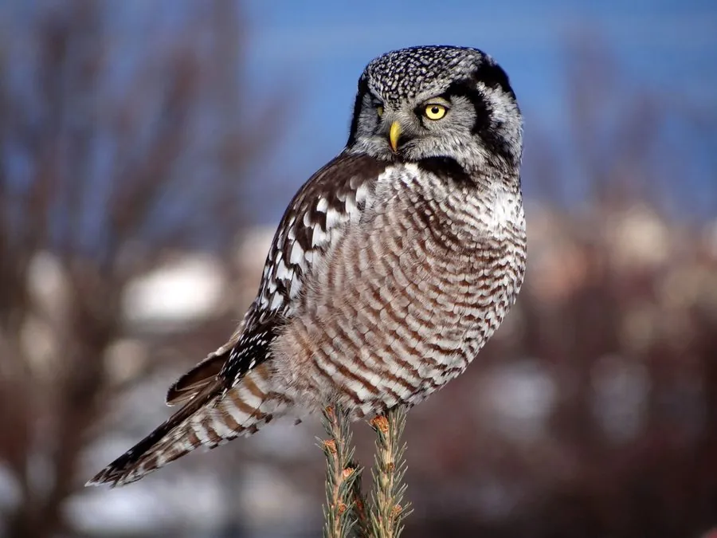

鸟类 · 动物界
猛鸮 Surnia ulula

外形似鹰的北方鸮类，尾长、面盘小，白天也积极捕猎。常停在针叶林顶梢观察雪面，发现田鼠后俯冲而下，并有储食习性。
- 分类
- 门脊索动物门纲鸟纲目鸮形目科鸱鸮科属猛鸮属
- 栖息环境
- 寒温带针叶林、针阔混交林、林缘沼泽与采伐迹地，偏好有枯树和开阔视野的环境。
- 地理分布
- 环北极泰加林带；中国仅见于东北大兴安岭及内蒙古东北部，罕见。
- 保护级别
- IUCN 红色名录列为无危（LC）；中国国家二级保护野生动物，列入 CITES 附录二。
物种志
猛鸮体长约三十五至四十三厘米，翼展六十九至八十二厘米，体重二百五十至四百五十克。外形似鹰：尾羽较长，翅较尖，面盘小而轮廓不明显，头顶平缓，没有耳羽簇。上体暗褐色，密布白色斑点；下体白色，胸部与腹部具粗著的褐色横斑。虹膜鲜黄色，嘴黄色，脚被羽。
它栖息于寒温带针叶林、针阔混交林与林缘沼泽，常在白天活动，停栖在枯树顶梢或电线杆上，发现猎物后快速俯冲，主食田鼠、旅鼠，也捕食小鸟和松鼠。食物丰富时会把猎物储存在树杈或树洞中。繁殖期利用树洞或旧巢，每窝产卵三至十枚，数量随鼠类丰度变化。猛鸮呈环北极分布，中国见于东北大兴安岭一带，为罕见留鸟或冬候鸟，列入国家二级保护动物。
形态与习性
- 体长35–43 厘米
- 翼展69–82 厘米
- 体重250–450 克
- 食性田鼠、旅鼠为主，兼食小鸟与松鼠
- 繁殖树洞或旧巢产卵，每窝 3–10 枚
- 保护级别国家二级；CITES 附录二
趣味知识
- 白天捕猎的猫头鹰，姿态和飞行方式都像小型鹰。
- 会将吃不完的田鼠塞进树杈缝隙储存。
- 窝卵数随鼠类数量变化，鼠多时一窝可达十枚。